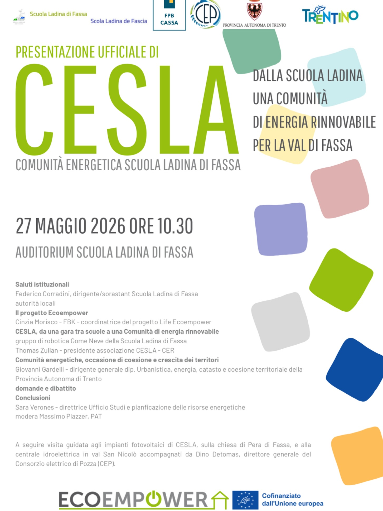

Il Nostro Progetto Storico

La Nostra Intuizione: Dal Robot alla Comunità Reale
Come squadra di robotica Gome Neve della Scuola Ladina di Fassa, tutto è iniziato durante la stagione 2022/2023 accettando la sfida scientifica della First Lego League, incentrata sul futuro dell'energia. Non volevamo limitarci a costruire un modellino teorico: volevamo lasciare un segno tangibile nel nostro territorio.
Abbiamo studiato e mappato da cima a fondo i consumi energetici reali dei nostri plessi scolastici e degli edifici vicini. Da quella che era nata come una competizione studentesca, abbiamo elaborato una proposta ingegneristica d'avanguardia per l'intera comunità alpina, gettando le basi per la fondazione di CESLA, la prima Comunità Energetica Rinnovabile (CER) della Val di Fassa.
Come Abbiamo Sviluppato l'Infrastruttura Tecnica
Abbiamo progettato un'architettura di rete basata sulla cooperazione energetica e su flussi di generazione pulita distribuiti, pensati per massimizzare l'autoconsumo locale istantaneo:
- Il Nostro Impianto: Sfruttiamo l'energia prodotta da un impianto fotovoltaico da 20 kWp posizionato sui tetti del nostro polo scolastico.
- La Rete Condivisa: L'energia pulita non autoconsumata sul momento viene immessa in rete e condivisa istantaneamente con le altre utenze della comunità locale.
- I Nostri Partner: Abbiamo unito le forze costituendo un'Associazione pluralista che include i Licei della Scuola Ladina di Fassa, la Scuola dell'Infanzia (Asilo) di Sèn Jan e il Consorzio Elettrico di Pozza (CEP), che ci supporta come partner tecnico e gestore della rete. Il progetto è inoltre supportato dall'iniziativa europea Life Ecoempower per la transizione energetica.
Il Nostro Obiettivo: Un Futuro Sostenibile e Circolare
L'aspetto di cui andiamo più fieri è che il CESLA non insegue profitti privati, ma incarna un modello puro di economia circolare, etica e ad alto impatto sociale:
- Il Nostro Laboratorio a Cielo Aperto: Monitoriamo costantemente i flussi energetici e i dati di produzione per studiare da vicino la transizione ecologica direttamente sul campo.
- Un Guadagno Condiviso: Tutti i benefici economici derivanti dagli incentivi statali sull'energia condivisa non vengono divisi tra i singoli, ma vengono reinvestiti per acquistare nuovo materiale didattico e tecnologie innovative per la nostra scuola e per i futuri studenti.